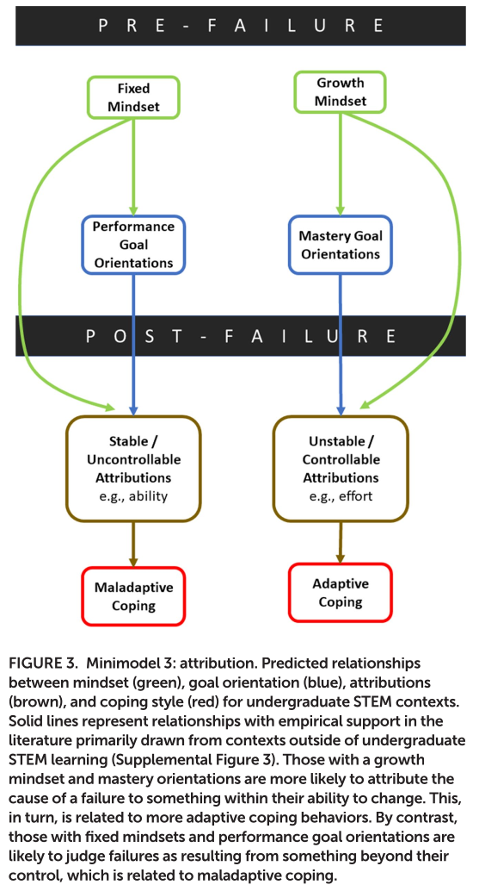

Syllabus
Contents
Syllabus#
Logistics#
CU Boulder: CSCI 3656 and 5606 (Spring 2023)
Recordings#
Recordings will be available in Canvas Mediasite.
Instructor: Jed Brown, jed.brown@colorado.edu, ECOT 824#
Office Hours: Please complete this survey to give your available times. I’m also always happy to meet by appointment.
Tip
Office hours are an important time for asking questions, solving problems, discussion of broader academic and career strategy, and to provide feedback so I can make the class serve your needs and those of people with similar experiences and interests.
Overview#
Numerical computation is the foundation of mechanistic/model-based and data-intensive science and engineering. Most people interact with numerical computation through libraries and higher level software packages. These interfaces are fundamentally leaky and it requires expertise to formulate well-posed problems and to recognize and diagnose when methods fail.
Organization#
We’ll start with evaluation of functions and introduce the concepts of conditioning and stability, which we’ll apply to every topic we encounter. Then we’ll explore rootfinding, our first infinite algorithm, in which we’ll learn about convergence classes and the fundamental challenge of writing a function that is correct for all well-typed inputs. We’ll move to linear algebra and explore algorithms for computing QR factorization in depth – these will offer geometric intuition and provide examples of stability and backward stability as well as performance in practice. Next up will be interpolation and least squares regression using linear models, algorithms that transform data and an important subjective choice into functions, with pathologies that we’ll identify and disentangle. Calculus will show up next where we’ll discuss numerical, analytic, and “automatic” differentiation, introduce Jacobian and Hessian matrices, and extend rootfinding to systems of equations. This will enable us to solve nonlinear regression problems and compare the properties of linear vs nonlinear models. We’ll move on to integration, with a beautiful linear algebra connection, and finally numerical solution of differential equations.
Although we’ll continue with new content, the second half of the semester will incorporate more project-based learning. You will choose an open source software package with an active community and give a presentation to the class about the choice of methods, stakeholders and community functioning, and identify opportunities for original studies and/or contribution. You’ll then form small teams of like interest and work on an original study (numerical experiments and interpretation, comparisons, etc.) or on contribution to be shared with the community. Studies and contributions can take many forms.
Outcomes#
Upon completing this course, students will be able to
formulate problems in science and engineering in terms of numerical computation
evaluate accuracy and performance of algorithms
diagnose ill conditioned problem formulations and unstable algorithms
select and use robust software libraries
develop effective numerical software, taking into account stability, accuracy, and cost
predict scaling challenges and computational costs when solving increasingly complex problems or attempting to meet real-time requirements
communicate about the above using figures, numerical experiments, writing, and presentation
search for and understand relevant literature and documentation
Ungrading#
I’m here to be your partner, not your adversary, and I promise not to waste your time. So I won’t grade (score) your work, though I will write feedback and meet with you to reflect and discuss strategy for growth. Why? TL;DR: Evidence shows that scoring undermines the value of writing comments.

Some activities and quizzes will be auto-scored. Those are formative assessments for you to check your understanding, not grades to be tallied. If you’re struggling, your journal should reflect on why, make goals for adaptive coping, and assess how that worked.


Expectations#
Enter with a growth mindset, practice adaptive coping, and nurture your intrinsic motivation
Attend class (in-person or virtual) and participate in discussions
you may choose asynchronous as needed for personal reasons, but please make sure to check in with other students and to actively experiment
Annotate assigned readings and respond thoughtfully to prompts
Make an honest attempt on activities, quizzes, etc.
Interact with the class notebooks and read reference material
Set goals and track your progress in your portfolio repository
revise these goals as you learn more
chase your creative impulses and include artifacts in your portfolio
Meet/chat with your partner weekly for at least a few minutes
share how lecture and activities are going
share your goals and how you’re progressing
identify questions
Ask or answer at least one question per week (mostly Zulip and Hypothesis)
ask a question that you don’t know the answer to
ask a question that you do know the answer to, but you think will be a good exercise/seed for discussion
ask me during office hours, write up your best understanding
make a meme relevant to the class
raise a concern or suggestion that you and/or peers have
contribute an answer or relevant discussion to any of the above
Individual and group projects
GitHub#
We’ll use Git with GitHub Classroom for managing activities and feedback. During the project-based learning later in the semester, you’ll likely interact with open source communities using these tools.
You are encouraged to work together on assignments, but must give credit to peer contributions via the commit messages or Git history. For example, you would add
Suggested-by: Friendly Neighbor <friendly.neighbor@colorado.edu>
to the commit message if that code incorporates an approach suggested by your neighbor. You should ensure that each assignment contains some of your own meaningful intellectual contributions and that you are prepared to discuss all aspects.
Programming languages and environment#
I will primarily use Julia and Jupyter notebooks for slides and activities in class. This environment is convenient to work with, general purpose, and has extensive library support. It is possible to write fast code in Julia, though performance implications can by mysterious. C, C++, and Fortran are popular languages for writing production numerical software, sometimes called from a higher level programming language like Python. MATLAB is also popular for numerical computing, though it is a proprietary environment and lacks general-purpose libraries. Rust is an exciting young language, albeit with limited numerical library support at this time.
We will make use of libraries written in several languages, and I’ll focus on the abstraction rather than minutia of the language. You don’t need prior experience in any particular language, but please bring a growth mindset and ask for help as needed (from myself and peers – Zulip is a good place for this).
Most HPC facilities use a Linux operating system and many open source software packages and libraries will have the best documentation and testing on Linux systems. You can use any environment for your local development environment, or use the CS Department’s JupyterHub coding.csel.io to experiment and develop without a local install.
Target audience#
Students in computer science, applied mathematics, or a quantitative science or engineering field. Prerequisites:
Intro programming (CSCI-1300 or alternatives)
Linear Algebra (CSCI-2820 or alternatives)
Calculus 2 (APPM-1360 or alternatives)
Classroom Behavior#
Both students and faculty are responsible for maintaining an appropriate learning environment in all instructional settings, whether in person, remote or online. Those who fail to adhere to such behavioral standards may be subject to discipline. Professional courtesy and sensitivity are especially important with respect to individuals and topics dealing with race, color, national origin, sex, pregnancy, age, disability, creed, religion, sexual orientation, gender identity, gender expression, veteran status, political affiliation or political philosophy. For more information, see the policies on classroom behavior and the Student Conduct & Conflict Resolution policies.
Requirements for COVID-19#
As a matter of public health and safety, all members of the CU Boulder community and all visitors to campus must follow university, department and building requirements and all public health orders in place to reduce the risk of spreading infectious disease. Students who fail to adhere to these requirements will be asked to leave class, and students who do not leave class when asked or who refuse to comply with these requirements will be referred to Student Conduct and Conflict Resolution. For more information, see the policy on classroom behavior and the Student Code of Conduct. If you require accommodation because a disability prevents you from fulfilling these safety measures, please follow the steps in the “Accommodation for Disabilities” statement on this syllabus.
CU Boulder currently requires masks in classrooms and laboratories regardless of vaccination status. This requirement is a precaution to supplement CU Boulder’s COVID-19 vaccine requirement. Exemptions include individuals who cannot medically tolerate a face covering, as well as those who are hearing-impaired or otherwise disabled or who are communicating with someone who is hearing-impaired or otherwise disabled and where the ability to see the mouth is essential to communication. If you qualify for a mask-related accommodation, please follow the steps in the “Accommodation for Disabilities” statement on this syllabus. In addition, vaccinated instructional faculty who are engaged in an indoor instructional activity and are separated by at least 6 feet from the nearest person are exempt from wearing masks if they so choose.
If you feel ill and think you might have COVID-19, if you have tested positive for COVID-19, or if you are unvaccinated or partially vaccinated and have been in close contact with someone who has COVID-19, you should stay home and follow the further guidance of the Public Health Office (contacttracing@colorado.edu). If you are fully vaccinated and have been in close contact with someone who has COVID-19, you do not need to stay home; rather, you should self-monitor for symptoms and follow the further guidance of the Public Health Office (contacttracing@colorado.edu).
Accommodation for Disabilities#
If you qualify for accommodations because of a disability, please submit your accommodation letter from Disability Services to your faculty member in a timely manner so that your needs can be addressed. Disability Services determines accommodations based on documented disabilities in the academic environment. Information on requesting accommodations is located on the Disability Services website. Contact Disability Services at 303-492-8671 or dsinfo@colorado.edu for further assistance. If you have a temporary medical condition, see Temporary Medical Conditions on the Disability Services website.
Preferred Student Names and Pronouns#
CU Boulder recognizes that students’ legal information doesn’t always align with how they identify. Students may update their preferred names and pronouns via the student portal; those preferred names and pronouns are listed on instructors’ class rosters. In the absence of such updates, the name that appears on the class roster is the student’s legal name.
Honor Code#
All students enrolled in a University of Colorado Boulder course are responsible for knowing and adhering to the Honor Code academic integrity policy. Violations of the Honor Code may include, but are not limited to: plagiarism, cheating, fabrication, lying, bribery, threat, unauthorized access to academic materials, clicker fraud, submitting the same or similar work in more than one course without permission from all course instructors involved, and aiding academic dishonesty. All incidents of academic misconduct will be reported to the Honor Code (honor@colorado.edu); 303-492-5550). Students found responsible for violating the academic integrity policy will be subject to nonacademic sanctions from the Honor Code as well as academic sanctions from the faculty member. Additional information regarding the Honor Code academic integrity policy can be found on the Honor Code website.
Religious Holidays#
Campus policy regarding religious observances requires that faculty make every effort to deal reasonably and fairly with all students who, because of religious obligations, have conflicts with scheduled exams, assignments or required attendance. This class is flexible in many ways, but I would appreciate if you let me know of any conflicts.
See the campus policy regarding religious observances for full details.